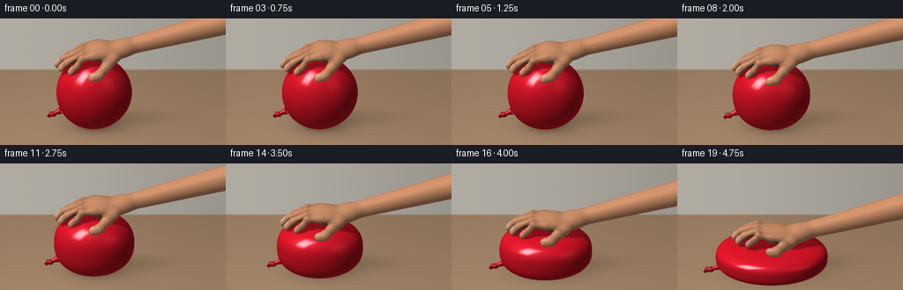
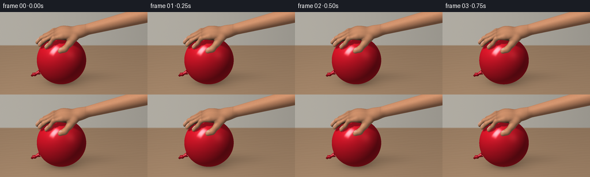

CODING AGENTS AS PIXEL WORLD MODELS
traex/GPT-6.1-Sol · phygen_013
点击播放 · 原生 RGB 像素
逐轮保存的候选
回放视频、检查图与代码变化。
每份候选均可单独播放。实际图片检查记录在下方工具轨迹中。
候选 01播放与检查图
点击播放 · 原生 RGB 像素


展开代码变化
--- 上一保存版本
+++ 本次保存版本
@@ -0,0 +1,405 @@
+"""Procedural RGB timelapse: hand compression of a sealed latex balloon.
+Only numpy/Pillow and explicit mathematical geometry are used for rendering.
+"""
+from pathlib import Path
+import json, math
+import numpy as np
+from PIL import Image
+import artifact_io
+
+ROOT = Path(__file__).resolve().parent
+SPEC = json.loads((ROOT / 'task_spec.json').read_text())
+W,H = SPEC['width'],SPEC['height']
+SS=3
+SW,SH=W*SS,H*SS
+SCALE=32.0*SS
+OX,OY=106.0*SS,123.0*SS
+VIEW=np.array([0.,-.8660254,.5])
+UP=np.array([0.,.5,.8660254])
+LIGHT=np.array([-.48,-.38,.79]); LIGHT/=np.linalg.norm(LIGHT)
+HALF=(LIGHT+VIEW); HALF/=np.linalg.norm(HALF)
+RNG=np.random.default_rng(3103)
+
+
+def unit(a):
+ return a / np.maximum(np.linalg.norm(a,axis=-1,keepdims=True),1e-9)
+
+def ellipsoid_sdf(p,c,r):
+ q=(p-np.array(c))/np.array(r)
+ k0=np.linalg.norm(q,axis=-1)
+ k1=np.linalg.norm(q/np.array(r),axis=-1)
+ return k0*(k0-1)/np.maximum(k1,1e-6)
+
+def capsule_sdf(p,a,b,ra,rb=None):
+ a=np.array(a); b=np.array(b)
+ d=b-a
+ t=np.clip(np.sum((p-a)*d,axis=-1)/np.dot(d,d),0,1)
+ r=ra if rb is None else ra+(rb-ra)*t
+ return np.linalg.norm(p-a-t[...,None]*d,axis=-1)-r
+
+def smin(a,b,k):
+ h=np.clip(.5+.5*(b-a)/k,0,1)
+ return b*(1-h)+a*h-k*h*(1-h)
+
+# Relative to the height of the balloon: palm-down, fingers directed left.
+PALMS=[([.43,.02,.31],[.77,.55,.29]),
+ ([1.00,.10,.39],[.45,.40,.27]),
+ ([.16,.02,.35],[.44,.53,.26])]
+ARM=([1.03,.13,.38],[5.3,.81,1.23],.285,.48)
+FINGERS=[]
+# front to back: little, ring, middle, index. Slightly staggered tips.
+for y,tip,rad in [(-.405,-.82,.119),(-.145,-1.16,.137),(.145,-1.28,.144),(.415,-1.10,.135)]:
+ pts=np.array([[.015,y,.34],[-.40,y-.015,.25],
+ [tip+.23,y-.035,-.05],[tip,y-.025,-.32]])
+ FINGERS.append((pts,rad))
+THUMB=np.array([[.74,-.39,.25],[.46,-.68,.08],[.20,-.91,-.15],[-.04,-.96,-.24]])
+
+def hand_sdf(p):
+ f=ellipsoid_sdf(p,*PALMS[0])
+ for c,r in PALMS[1:]: f=smin(f,ellipsoid_sdf(p,c,r),.18)
+ f=smin(f,capsule_sdf(p,*ARM),.19)
+ for pts,rad in FINGERS:
+ for k in range(3):
+ g=capsule_sdf(p,pts[k],pts[k+1],rad*(1-.08*k),rad*(1-.08*(k+1)))
+ f=smin(f,g,.09 if k else .145)
+ for k in range(3):
+ f=smin(f,capsule_sdf(p,THUMB[k],THUMB[k+1],.183-.015*k,.168-.015*k),.14)
+ return f
+
+
+def implicit_mesh():
+ """Own vectorized marching tetrahedra; no simulation/rendering library."""
+ dx=.063
+ xs=np.arange(-1.52,5.85,dx); ys=np.arange(-1.23,1.42,dx); zs=np.arange(-.58,1.86,dx)
+ grid=np.stack(np.meshgrid(xs,ys,zs,indexing='ij'),axis=-1)
+ f=hand_sdf(grid)
+ grad=np.stack(np.gradient(f,dx,edge_order=2),axis=-1)
+ corners=np.array([[0,0,0],[1,0,0],[1,1,0],[0,1,0],[0,0,1],[1,0,1],[1,1,1],[0,1,1]])
+ fs=[]
+ for x,y,z in corners:
+ fs.append(f[x:len(xs)-1+x,y:len(ys)-1+y,z:len(zs)-1+z])
+ lo=np.minimum.reduce(fs); hi=np.maximum.reduce(fs)
+ cells=np.stack(np.where((lo<0)&(hi>=0)),axis=-1)
+ inds=cells[:,None,:]+corners[None,:,:]
+ points=grid[inds[:,:,0],inds[:,:,1],inds[:,:,2]]
+ vals=f[inds[:,:,0],inds[:,:,1],inds[:,:,2]]
+ grads=grad[inds[:,:,0],inds[:,:,1],inds[:,:,2]]
+ tetras=[[0,5,1,6],[0,1,2,6],[0,2,3,6],[0,3,7,6],[0,7,4,6],[0,4,5,6]]
+ vp=[]; vn=[]
+ for ids in tetras:
+ ps=points[:,ids]; vs=vals[:,ids]; ns=grads[:,ids]
+ codes=np.sum((vs<0)*np.array([1,2,4,8]),axis=1)
+ for code in range(1,15):
+ chosen=np.where(codes==code)[0]
+ if len(chosen)==0: continue
+ ins=[k for k in range(4) if code&(1<<k)]
+ outs=[k for k in range(4) if not code&(1<<k)]
+ def edge(a,b):
+ t=vs[chosen,a]/(vs[chosen,a]-vs[chosen,b])
+ v=ps[chosen,a]+t[:,None]*(ps[chosen,b]-ps[chosen,a])
+ n=ns[chosen,a]+t[:,None]*(ns[chosen,b]-ns[chosen,a])
+ return v,unit(n)
+ if len(ins)==1 or len(ins)==3:
+ one=ins[0] if len(ins)==1 else outs[0]
+ many=outs if len(ins)==1 else ins
+ ee=[edge(one,b) for b in many]
+ vp.append(np.stack([e[0] for e in ee],axis=1)); vn.append(np.stack([e[1] for e in ee],axis=1))
+ else:
+ ee=[edge(ins[0],outs[0]),edge(ins[0],outs[1]),edge(ins[1],outs[0]),edge(ins[1],outs[1])]
+ for tri in [[0,1,2],[1,3,2]]:
+ vp.append(np.stack([ee[k][0] for k in tri],axis=1)); vn.append(np.stack([ee[k][1] for k in tri],axis=1))
+ return np.concatenate(vp),np.concatenate(vn)
+
+
+def sphere_mesh(c,r,lat=30,lon=54,basis=None):
+ theta=np.linspace(-np.pi/2,np.pi/2,lat+1)
+ phi=np.linspace(0,2*np.pi,lon+1)
+ t,p=np.meshgrid(theta,phi,indexing='ij')
+ q=np.stack([np.cos(t)*np.cos(p),np.cos(t)*np.sin(p),np.sin(t)],axis=-1)
+ pos=q*np.array(r)
+ n=unit(q/np.array(r))
+ if basis is not None:
+ pos=pos@basis.T; n=n@basis.T
+ pos+=np.array(c)
+ return grid_triangles(pos,n)
+
+
+def grid_triangles(p,n):
+ a=p[:-1,:-1]; b=p[:-1,1:]; c=p[1:,:-1]; d=p[1:,1:]
+ na=n[:-1,:-1]; nb=n[:-1,1:]; nc=n[1:,:-1]; nd=n[1:,1:]
+ return (np.concatenate([np.stack([a,b,c],-2).reshape(-1,3,3),np.stack([b,d,c],-2).reshape(-1,3,3)]),
+ np.concatenate([np.stack([na,nb,nc],-2).reshape(-1,3,3),np.stack([nb,nd,nc],-2).reshape(-1,3,3)]))
+
+
+def warp_amount(p):
+ # Curling fingertips become flatter as the balloon's contact patch widens.
+ a=1/(1+np.exp(np.clip(5.0*(p[...,0]+.33),-30,30)))
+ b=1/(1+np.exp(np.clip(12*(p[...,1]+.64),-30,30)))
+ gate=1/(1+np.exp(np.clip(6*(p[...,0]-.80),-30,30)))
+ return .49*a+.31*b*gate
+
+
+def deform(p,n,h,c):
+ q=p.copy(); q[...,2]+=h+c*warp_amount(p)
+ e=.003
+ px=p.copy(); px[...,0]+=e
+ mx=p.copy(); mx[...,0]-=e
+ py=p.copy(); py[...,1]+=e
+ my=p.copy(); my[...,1]-=e
+ gx=c*(warp_amount(px)-warp_amount(mx))/(2*e)
+ gy=c*(warp_amount(py)-warp_amount(my))/(2*e)
+ nn=n.copy(); nn[...,0]-=gx*n[...,2]; nn[...,1]-=gy*n[...,2]
+ return q,unit(nn)
+
+
+HAND_V,HAND_N=implicit_mesh()
+print('Hand triangles:',len(HAND_V),flush=True)
+# AO is calculated on the original complete hand, keeping finger separations natural.
+flatp=HAND_V.reshape(-1,3); flatn=HAND_N.reshape(-1,3)
+ao=np.ones(len(flatp))
+for distance,weight in [(.09,.30),(.23,.24),(.48,.14)]:
+ dist=hand_sdf(flatp+flatn*distance)
+ ao-=weight*np.clip((distance-dist)/distance,0,1)
+HAND_AO=ao.reshape(-1,3)
+
+# Short, oval, unpainted fingernails, embedded flush in the dorsal fingertips.
+NAILS=[]
+for pts,r in FINGERS:
+ direction=unit(pts[-1]-pts[-2])
+ across=np.array([0.,1.,0.])
+ top=unit(np.cross(direction,across))
+ if top[2]<0: top=-top
+ basis=np.stack([direction,across,top],axis=-1)
+ c=pts[-1]-direction*.135+top*(r*.83)
+ pv,nv=sphere_mesh(c,[.16,r*.65,.019],14,28,basis)
+ NAILS.append((pv,nv,c,basis))
+# Thumb nail faces upward and slightly towards the camera.
+direction=unit(THUMB[-1]-THUMB[-2]); across=unit(np.cross([0.,0.,1.],direction)); top=unit(np.cross(direction,across))
+basis=np.stack([direction,across,top],axis=-1)
+c=THUMB[-1]-direction*.13+top*.133
+pv,nv=sphere_mesh(c,[.17,.108,.022],14,28,basis)
+NAILS.append((pv,nv,c,basis))
+
+
+def shade_hand(p,n,ao=1):
+ diff=np.clip(n@LIGHT,0,1)
+ facing=np.clip(n@VIEW,0,1)
+ color=np.zeros(p.shape)+np.array([204.,143.,106.])
+ # Fine skin pigmentation, with warm joints and reddish interdigital regions.
+ texture=(np.sin(p[...,0]*117+p[...,1]*91+p[...,2]*56)*np.sin(p[...,1]*173-p[...,2]*103))
+ color+=texture[...,None]*1.6
+ dorsal=np.clip(n[...,2],0,1)
+ crease=np.zeros(p.shape[:-1])
+ for pts,rad in FINGERS:
+ y=pts[1,1]
+ span=np.exp(-((p[...,1]-y)/(.82*rad))**8)
+ for x,z,w in [(-.38,.28,.012),(-.66,.09,.012),(-.94,-.18,.009)]:
+ crease+=np.exp(-((p[...,0]-x)/w)**2)*span*.085*dorsal
+ # Fine longitudinal tendons along the dorsum.
+ tendon=np.exp(-((p[...,1]-y)/.045)**2)*np.exp(-((p[...,0]-.39)/.66)**4)*dorsal
+ color+=tendon[...,None]*np.array([4,3,2])
+ wrist_band=np.exp(-((p[...,0]-1.32)/.019)**2)*np.exp(-((p[...,1]-.10)/.31)**4)*dorsal
+ crease+=wrist_band*.06
+ color*=1-crease[...,None]
+ # Faint vein, only on the dorsal wrist, not a drawn outline.
+ vein_y=.09+.045*np.sin(p[...,0]*4.2)
+ vein=np.exp(-((p[...,1]-vein_y)/.021)**2)*np.exp(-((p[...,0]-1.6)/.7)**4)*dorsal
+ color+=vein[...,None]*np.array([-3,-.5,1.0])
+ illumination=.48+.53*diff+.06*np.clip(n[...,2],0,1)
+ color*=illumination[...,None]*np.asarray(ao)[...,None]
+ spec=np.clip(n@HALF,0,1)**30*.055
+ color+=spec[...,None]*np.array([255,220,186])
+ color+=(1-facing)[...,None]**3*np.array([6,2,1])
+ return np.clip(color,0,255)
+
+
+def balloon_mesh(h,rx,ry,power):
+ th=np.linspace(-np.pi/2,np.pi/2,73)
+ ph=np.linspace(0,2*np.pi,145)
+ t,phi=np.meshgrid(th,ph,indexing='ij')
+ cost=np.maximum(np.cos(t),1e-12); sint=np.sin(t)
+ rho=cost**(2/power)
+ zz=np.sign(sint)*np.abs(sint)**(2/power)
+ x=rx*rho*np.cos(phi); y=ry*rho*np.sin(phi)
+ z=.038+h/2*(1+zz)
+ # Rounded, barely perceptible inflation asymmetry, not a perfectly rigid ball.
+ asym=1+.018*np.cos(phi)*np.cos(t)**2
+ x*=asym; y*=asym
+ pos=np.stack([x,y,z],-1)
+ nrx=(rho**(power-1))*np.cos(phi)/rx
+ nry=(rho**(power-1))*np.sin(phi)/ry
+ nrz=np.sign(zz)*np.abs(zz)**(power-1)/(h/2)
+ norm=unit(np.stack([nrx,nry,nrz],-1))
+ return grid_triangles(pos,norm)
+
+
+def hand_shadow(p,h,amount):
+ visibility=np.ones(p.shape[:-1])
+ sources=[]
+ for c,r in PALMS:
+ c=np.array(c,float); c[2]+=h+amount*warp_amount(c)
+ sources.append((c,np.array(r)))
+ for pts,rad in FINGERS:
+ for i in [0,1,2]:
+ c=(pts[i]+pts[i+1])/2
+ c=c.copy(); c[2]+=h+amount*warp_amount(c)
+ sources.append((c,np.array([.27,rad+.025,rad+.035])))
+ for c,r in sources:
+ q=(p-c)/r
+ l=LIGHT/r
+ tt=-np.sum(q*l,axis=-1)/np.sum(l*l)
+ near=q+tt[...,None]*l
+ d=np.linalg.norm(near,axis=-1)
+ softness=.12+np.clip(tt,0,3)*.18
+ sh=np.clip((1+softness-d)/softness,0,1)
+ sh*= (tt>.035)
+ visibility=np.minimum(visibility,1-.66*sh)
+ return visibility
+
+
+def shade_balloon(p,n,h,amount):
+ diffuse=np.maximum(n@LIGHT,0)
+ facing=np.maximum(n@VIEW,0)
+ shadow=hand_shadow(p,h,amount)
+ # Saturated, thin latex, with diffuse red subsurface light and glossy softbox.
+ base=np.array([211.,22.,40.])
+ lighting=.36+.65*diffuse*shadow+.085*np.maximum(n[...,2],0)
+ rgb=base*lighting[...,None]
+ rgb+=(1-facing)[...,None]**2*np.array([23.,1.0,3.0])
+ # Reflected rectangular studio window: narrow bright core, feathered perimeter.
+ reflected=2*(n@VIEW)[...,None]*n-VIEW
+ tangent=unit(np.cross(LIGHT,[0,0,1.])); vertical=unit(np.cross(tangent,LIGHT))
+ a=reflected@tangent; b=reflected@vertical; front=reflected@LIGHT
+ reflection=np.exp(-((a/.22)**6+(b/.39)**6))*np.maximum(front,0)**5
+ soft=np.maximum(n@HALF,0)**26*.11
+ rgb+=(reflection*.65+soft)[...,None]*np.array([255.,226.,218.])*shadow[...,None]
+ # A dim secondary reflection and tabletop bounce preserve the rounded volume.
+ second=unit(np.array([.66,-.55,.50])+VIEW)
+ rgb+=(np.maximum(n@second,0)**55*.085)[...,None]*np.array([250,153,136])
+ rgb+=np.maximum(-n[...,2],0)[...,None]*np.array([15,3,2])
+ texture=np.sin(p[...,0]*74+p[...,1]*83)*np.sin(p[...,2]*122-p[...,1]*96)
+ rgb+=texture[...,None]*.35
+ return np.clip(rgb,0,255)
+
+
+class Renderer:
+ def __init__(self,im):
+ self.im=im.copy(); self.depth=np.full((SH,SW),-1e10,np.float32)
+ def mesh(self,p,n,color):
+ pp=p.reshape(-1,3)
+ sx=(OX+SCALE*pp[:,0]).reshape(-1,3)
+ sy=(OY-SCALE*(pp@UP)).reshape(-1,3)
+ zz=(pp@VIEW).reshape(-1,3)
+ col=color.reshape(-1,3,3)
+ # Drawing is explicit z-buffered triangle rasterization with smooth attributes.
+ for k in range(len(p)):
+ x=sx[k]; y=sy[k]; z=zz[k]
+ xmin=max(0,int(np.floor(x.min()))); xmax=min(SW-1,int(np.ceil(x.max())))
+ ymin=max(0,int(np.floor(y.min()))); ymax=min(SH-1,int(np.ceil(y.max())))
+ if xmax<xmin or ymax<ymin: continue
+ den=(y[1]-y[2])*(x[0]-x[2])+(x[2]-x[1])*(y[0]-y[2])
+ if abs(den)<1e-7: continue
+ xx=np.arange(xmin,xmax+1,dtype=np.float32)[None,:]+.5
+ yy=np.arange(ymin,ymax+1,dtype=np.float32)[:,None]+.5
+ a=((y[1]-y[2])*(xx-x[2])+(x[2]-x[1])*(yy-y[2]))/den
+ b=((y[2]-y[0])*(xx-x[2])+(x[0]-x[2])*(yy-y[2]))/den
+ c=1-a-b
+ depth=a*z[0]+b*z[1]+c*z[2]
+ db=self.depth[ymin:ymax+1,xmin:xmax+1]
+ valid=(a>=-.00001)&(b>=-.00001)&(c>=-.00001)&(depth>db)
+ if not valid.any(): continue
+ shade=a[...,None]*col[k,0]+b[...,None]*col[k,1]+c[...,None]*col[k,2]
+ self.im[ymin:ymax+1,xmin:xmax+1][valid]=shade[valid]
+ db[valid]=depth[valid]
+
+
+# Continuous, uncluttered real-world backdrop with a matte wooden tabletop.
+sy,sx=np.mgrid[0:SH,0:SW].astype(float)
+xx=(sx+.5-OX)/SCALE; screenup=(OY-sy-.5)/SCALE
+floor_y=2*screenup
+grain_noise=RNG.normal(0,.37,(SH,SW))
+wall=np.zeros((SH,SW,3))
+illum=1-.10*(sx/SW)+.065*np.exp(-((sx/SW-.28)/.65)**2)
+for k,value in enumerate([167,163,154]): wall[...,k]=value*illum
+wall+=grain_noise[...,None]
+floor=np.zeros_like(wall)
+# Small irregular parallel grain at this distance, rather than drawn stripes.
+wood=(np.sin(floor_y*24+np.sin(xx*3+floor_y*3)*1.6)+.45*np.sin(floor_y*63+xx*.7))*.85
+fade=.95+.08*np.exp(-((xx+1.8)/4)**2)-.015*floor_y
+for k,value in enumerate([156,127,100]): floor[...,k]=value*fade+wood
+floor+=grain_noise[...,None]*.7
+blend=np.clip((4.05-floor_y)/.12+.5,0,1)
+BACKGROUND=wall*(1-blend[...,None])+floor*blend[...,None]
+
+
+def tube_mesh(points,radii):
+ pts=np.array(points); radii=np.array(radii)
+ phi=np.linspace(0,2*np.pi,29)
+ pos=[]; norm=[]
+ for i,pt in enumerate(pts):
+ direction=pts[min(i+1,len(pts)-1)]-pts[max(0,i-1)]
+ tangent=unit(direction)
+ u=unit(np.cross(tangent,[0,1.,0.])); v=unit(np.cross(tangent,u))
+ nn=np.cos(phi)[:,None]*u+np.sin(phi)[:,None]*v
+ pos.append(pt+radii[i]*nn); norm.append(nn)
+ return grid_triangles(np.array(pos),np.array(norm))
+
+
+def frame(index):
+ t=index/(SPEC['frames']-1)
+ # Increasing loading rate: gentle initial contact, then rapidly rising pressure.
+ press=t**2.35
+ h=2.74-1.62*press
+ power=2.0+1.10*press
+ C=lambda p: math.gamma(1+1/p)*math.gamma(1+2/p)/math.gamma(1+3/p)
+ expand=math.sqrt(2.74*C(2)/(h*C(power)))
+ rx=1.34*expand*(1+.045*press); ry=1.14*expand/(1+.045*press)
+ # Soft cast/contact shadows are located on the tabletop, expanding with the body.
+ shx=xx-.28; shy=floor_y-.27
+ broad=np.exp(-((shx/(rx*.94))**2+(shy/(ry*.87))**2)*1.5)*.23
+ contact=np.exp(-((xx/(rx*.68))**2+(floor_y/(ry*.50))**2)*2.6)*(.23+.16*press)
+ armshadow=np.exp(-(((xx-1.7)/1.8)**2+((floor_y-.63)/.8)**2)*2.2)*.08
+ bg=BACKGROUND*(1-(broad+contact+armshadow)*blend)[...,None]
+ render=Renderer(bg)
+ bv,bn=balloon_mesh(h,rx,ry,power)
+ bc=shade_balloon(bv,bn,h+.038,press)
+ render.mesh(bv,bn,bc)
+ # Sealed neck and unmistakable small tied knot, on the lower left flank.
+ knotz=.038+h*.26
+ neck=[[-rx*.87,-.17,knotz],[-rx*.98,-.18,knotz-.07],[-rx*1.065,-.19,knotz-.13],[-rx*1.12,-.18,knotz-.135]]
+ kv,kn=tube_mesh(neck,[.13,.075,.067,.096])
+ render.mesh(kv,kn,shade_balloon(kv,kn,h+.038,press)*.90)
+ kv,kn=sphere_mesh(neck[-2],[.106,.104,.096],18,30)
+ render.mesh(kv,kn,shade_balloon(kv,kn,h+.038,press)*.82)
+ # Flared mouth of the tied balloon, folded and safely sealed behind the knot.
+ kv,kn=tube_mesh([neck[-1],[-rx*1.16,-.18,knotz-.15],[-rx*1.18,-.17,knotz-.13]],[.073,.12,.105])
+ render.mesh(kv,kn,shade_balloon(kv,kn,h+.038,press)*.86)
+ hv,hn=deform(HAND_V,HAND_N,h+.038,press)
+ hc=shade_hand(HAND_V,hn,HAND_AO)
+ render.mesh(hv,hn,hc)
+ for pv,nv,nc,basis in NAILS:
+ q,nn=deform(pv,nv,h+.038,press)
+ diff=np.clip(nn@LIGHT,0,1)
+ local=(pv-nc)@basis
+ nailcol=np.zeros(pv.shape)+np.array([221.,170.,145.])
+ # Small off-white free edge, not polished or artificially long.
+ tip=np.clip((local[...,0]-.095)/.055,0,1)
+ nailcol+=tip[...,None]*np.array([10,13,13])
+ nailcol*= (.56+.46*diff)[...,None]
+ nailcol+=(np.maximum(nn@HALF,0)**45*.11)[...,None]*np.array([255,228,214])
+ render.mesh(q,nn,nailcol)
+ # Natural sensor grain is stable, small, and never distracts from compression.
+ im=np.clip(render.im,0,255).astype(np.uint8)
+ return np.asarray(Image.fromarray(im).resize((W,H),Image.Resampling.LANCZOS))
+
+
+def main():
+ frames=[]
+ for i in range(SPEC['frames']):
+ frames.append(frame(i))
+ print('Rendered %02d / %02d'%(i+1,SPEC['frames']),flush=True)
+ artifact_io.save(np.stack(frames).astype(np.uint8),ROOT)
+ print('Saved RGB video artifacts.',flush=True)
+
+if __name__=='__main__':
+ main()
可观测工具轨迹
实际执行的命令与返回图片。
命令 1exit 0
/bin/bash -lc 'ls -la && cat prompt.txt && cat GENERATION_RULES.md && cat task_spec.json'
命令 2exit 0
/bin/bash -lc "cat artifact_io.py && python - <<'PY' import importlib.util for m in ['numpy','PIL','scipy']: print(m, bool(importlib.util.find_spec(m))) PY"
命令 3exit 0
/bin/bash -lc "cat > generate.py <<'PY'
\"\"\"Procedural RGB timelapse: hand compression of a sealed latex balloon.
Only numpy/Pillow and explicit mathematical geometry are used for rendering.
\"\"\"
from pathlib import Path
import json, math
import numpy as np
from PIL import Image
import artifact_io
ROOT = Path(__file__).resolve().parent
SPEC = json.loads((ROOT / 'task_spec.json').read_text())
W,H = SPEC['width'],SPEC['height']
SS=3
SW,SH=W*SS,H*SS
SCALE=32.0*SS
OX,OY=106.0*SS,123.0*SS
VIEW=np.array([0.,-.8660254,.5])
UP=np.array([0.,.5,.8660254])
LIGHT=np.array([-.48,-.38,.79]); LIGHT/=np.linalg.norm(LIGHT)
HALF=(LIGHT+VIEW); HALF/=np.linalg.norm(HALF)
RNG=np.random.default_rng(3103)
def unit(a):
return a / np.maximum(np.linalg.norm(a,axis=-1,keepdims=True),1e-9)
def ellipsoid_sdf(p,c,r):
q=(p-np.array(c))/np.array(r)
k0=np.linalg.norm(q,axis=-1)
k1=np.linalg.norm(q/np.array(r),axis=-1)
return k0*(k0-1)/np.maximum(k1,1e-6)
def capsule_sdf(p,a,b,ra,rb=None):
a=np.array(a); b=np.array(b)
d=b-a
t=np.clip(np.sum((p-a)*d,axis=-1)/np.dot(d,d),0,1)
r=ra if rb is None else ra+(rb-ra)*t
return np.linalg.norm(p-a-t[...,None]*d,axis=-1)-r
def smin(a,b,k):
h=np.clip(.5+.5*(b-a)/k,0,1)
return b*(1-h)+a*h-k*h*(1-h)
# Relative to the height of the balloon: palm-down, fingers directed left.
PALMS=[([.43,.02,.31],[.77,.55,.29]),
([1.00,.10,.39],[.45,.40,.27]),
([.16,.02,.35],[.44,.53,.26])]
ARM=([1.03,.13,.38],[5.3,.81,1.23],.285,.48)
FINGERS=[]
# front to back: little, ring, middle, index. Slightly staggered tips.
for y,tip,rad in [(-.405,-.82,.119),(-.145,-1.16,.137),(.145,-1.28,.144),(.415,-1.10,.135)]:
pts=np.array([[.015,y,.34],[-.40,y-.015,.25],
[tip+.23,y-.035,-.05],[tip,y-.025,-.32]])
FINGERS.append((pts,rad))
THUMB=np.array([[.74,-.39,.25],[.46,-.68,.08],[.20,-.91,-.15],[-.04,-.96,-.24]])
def hand_sdf(p):
f=ellipsoid_sdf(p,*PALMS[0])
for c,r in PALMS[1:]: f=smin(f,ellipsoid_sdf(p,c,r),.18)
f=smin(f,capsule_sdf(p,*ARM),.19)
for pts,rad in FINGERS:
for k in range(3):
g=capsule_sdf(p,pts[k],pts[k+1],rad*(1-.08*k),rad*(1-.08*(k+1)))
f=smin(f,g,.09 if k else .145)
for k in range(3):
f=smin(f,capsule_sdf(p,THUMB[k],THUMB[k+1],.183-.015*k,.168-.015*k),.14)
return f
def implicit_mesh():
\"\"\"Own vectorized marching tetrahedra; no simulation/rendering library.\"\"\"
dx=.063
xs=np.arange(-1.52,5.85,dx); ys=np.arange(-1.23,1.42,dx); zs=np.arange(-.58,1.86,dx)
grid=np.stack(np.meshgrid(xs,ys,zs,indexing='ij'),axis=-1)
f=hand_sdf(grid)
grad=np.stack(np.gradient(f,dx,edge_order=2),axis=-1)
corners=np.array([[0,0,0],[1,0,0],[1,1,0],[0,1,0],[0,0,1],[1,0,1],[1,1,1],[0,1,1]])
fs=[]
for x,y,z in corners:
fs.append(f[x:len(xs)-1+x,y:len(ys)-1+y,z:len(zs)-1+z])
lo=np.minimum.reduce(fs); hi=np.maximum.reduce(fs)
cells=np.stack(np.where((lo<0)&(hi>=0)),axis=-1)
inds=cells[:,None,:]+corners[None,:,:]
points=grid[inds[:,:,0],inds[:,:,1],inds[:,:,2]]
vals=f[inds[:,:,0],inds[:,:,1],inds[:,:,2]]
grads=grad[inds[:,:,0],inds[:,:,1],inds[:,:,2]]
tetras=[[0,5,1,6],[0,1,2,6],[0,2,3,6],[0,3,7,6],[0,7,4,6],[0,4,5,6]]
vp=[]; vn=[]
for ids in tetras:
ps=points[:,ids]; vs=vals[:,ids]; ns=grads[:,ids]
codes=np.sum((vs<0)*np.array([1,2,4,8]),axis=1)
for code in range(1,15):
chosen=np.where(codes==code)[0]
if len(chosen)==0: continue
ins=[k for k in range(4) if code&(1<<k)]
outs=[k for k in range(4) if not code&(1<<k)]
def edge(a,b):
t=vs[chosen,a]/(vs[chosen,a]-vs[chosen,b])
v=ps[chosen,a]+t[:,None]*(ps[chosen,b]-ps[chosen,a])
n=ns[chosen,a]+t[:,None]*(ns[chosen,b]-ns[chosen,a])
return v,unit(n)
if len(ins)==1 or len(ins)==3:
one=ins[0] if len(ins)==1 else outs[0]
many=outs if len(ins)==1 else ins
ee=[edge(one,b) for b in many]
vp.append(np.stack([e[0] for e in ee],axis=1)); vn.append(np.stack([e[1] for e in ee],axis=1))
else:
ee=[edge(ins[0],outs[0]),edge(ins[0],outs[1]),edge(ins[1],outs[0]),edge(ins[1],outs[1])]
for tri in [[0,1,2],[1,3,2]]:
vp.append(np.stack([ee[k][0] for k in tri],axis=1)); vn.append(np.stack([ee[k][1] for k in tri],axis=1))
return np.concatenate(vp),np.concatenate(vn)
def sphere_mesh(c,r,lat=30,lon=54,basis=None):
theta=np.linspace(-np.pi/2,np.pi/2,lat+1)
phi=np.linspace(0,2*np.pi,lon+1)
t,p=np.meshgrid(theta,phi,indexing='ij')
q=np.stack([np.cos(t)*np.cos(p),np.cos(t)*np.sin(p),np.sin(t)],axis=-1)
pos=q*np.array(r)
n=unit(q/np.array(r))
if basis is not None:
pos=pos@basis.T; n=n@basis.T
pos+=np.array(c)
return grid_triangles(pos,n)
def grid_triangles(p,n):
a=p[:-1,:-1]; b=p[:-1,1:]; c=p[1:,:-1]; d=p[1:,1:]
na=n[:-1,:-1]; nb=n[:-1,1:]; nc=n[1:,:-1]; nd=n[1:,1:]
return (np.concatenate([np.stack([a,b,c],-2).reshape(-1,3,3),np.stack([b,d,c],-2).reshape(-1,3,3)]),
np.concatenate([np.stack([na,nb,nc],-2).reshape(-1,3,3),np.stack([nb,nd,nc],-2).reshape(-1,3,3)]))
def warp_amount(p):
# Curling fingertips become flatter as the balloon's contact patch widens.
a=1/(1+np.exp(np.clip(5.0*(p[...,0]+.33),-30,30)))
b=1/(1+np.exp(np.clip(12*(p[...,1]+.64),-30,30)))
gate=1/(1+np.exp(np.clip(6*(p[...,0]-.80),-30,30)))
return .49*a+.31*b*gate
def deform(p,n,h,c):
q=p.copy(); q[...,2]+=h+c*warp_amount(p)
e=.003
px=p.copy(); px[...,0]+=e
mx=p.copy(); mx[...,0]-=e
py=p.copy(); py[...,1]+=e
my=p.copy(); my[...,1]-=e
gx=c*(warp_amount(px)-warp_amount(mx))/(2*e)
gy=c*(warp_amount(py)-warp_amount(my))/(2*e)
nn=n.copy(); nn[...,0]-=gx*n[...,2]; nn[...,1]-=gy*n[...,2]
return q,unit(nn)
HAND_V,HAND_N=implicit_mesh()
print('Hand triangles:',len(HAND_V),flush=True)
# AO is calculated on the original complete hand, keeping finger separations natural.
flatp=HAND_V.reshape(-1,3); flatn=HAND_N.reshape(-1,3)
ao=np.ones(len(flatp))
for distance,weight in [(.09,.30),(.23,.24),(.48,.14)]:
dist=hand_sdf(flatp+flatn*distance)
ao-=weight*np.clip((distance-dist)/distance,0,1)
HAND_AO=ao.reshape(-1,3)
# Short, oval, unpainted fingernails, embedded flush in the dorsal fingertips.
NAILS=[]
for pts,r in FINGERS:
direction=unit(pts[-1]-pts[-2])
across=np.array([0.,1.,0.])
top=unit(np.cross(direction,across))
if top[2]<0: top=-top
basis=np.stack([direction,across,top],axis=-1)
c=pts[-1]-direction*.135+top*(r*.83)
pv,nv=sphere_mesh(c,[.16,r*.65,.019],14,28,basis)
NAILS.append((pv,nv,c,basis))
# Thumb nail faces upward and slightly towards the camera.
direction=unit(THUMB[-1]-THUMB[-2]); across=unit(np.cross([0.,0.,1.],direction)); top=unit(np.cross(direction,across))
basis=np.stack([direction,across,top],axis=-1)
c=THUMB[-1]-direction*.13+top*.133
pv,nv=sphere_mesh(c,[.17,.108,.022],14,28,basis)
NAILS.append((pv,nv,c,basis))
def shade_hand(p,n,ao=1):
diff=np.clip(n@LIGHT,0,1)
facing=np.clip(n@VIEW,0,1)
color=np.zeros(p.shape)+np.array([204.,143.,106.])
# Fine skin pigmentation, with warm joints and reddish interdigital regions.
texture=(np.sin(p[...,0]*117+p[...,1]*91+p[...,2]*56)*np.sin(p[...,1]*173-p[...,2]*103))
color+=texture[...,None]*1.6
dorsal=np.clip(n[...,2],0,1)
crease=np.zeros(p.shape[:-1])
for pts,rad in FINGERS:
y=pts[1,1]
span=np.exp(-((p[...,1]-y)/(.82*rad))**8)
for x,z,w in [(-.38,.28,.012),(-.66,.09,.012),(-.94,-.18,.009)]:
crease+=np.exp(-((p[...,0]-x)/w)**2)*span*.085*dorsal
# Fine longitudinal tendons along the dorsum.
tendon=np.exp(-((p[...,1]-y)/.045)**2)*np.exp(-((p[...,0]-.39)/.66)**4)*dorsal
color+=tendon[...,None]*np.array([4,3,2])
wrist_band=np.exp(-((p[...,0]-1.32)/.019)**2)*np.exp(-((p[...,1]-.10)/.31)**4)*dorsal
crease+=wrist_band*.06
color*=1-crease[...,None]
# Faint vein, only on the dorsal wrist, not a drawn outline.
vein_y=.09+.045*np.sin(p[...,0]*4.2)
vein=np.exp(-((p[...,1]-vein_y)/.021)**2)*np.exp(-((p[...,0]-1.6)/.7)**4)*dorsal
color+=vein[...,None]*np.array([-3,-.5,1.0])
illumination=.48+.53*diff+.06*np.clip(n[...,2],0,1)
color*=illumination[...,None]*np.asarray(ao)[...,None]
spec=np.clip(n@HALF,0,1)**30*.055
color+=spec[...,None]*np.array([255,220,186])
color+=(1-facing)[...,None]**3*np.array([6,2,1])
return np.clip(color,0,255)
def balloon_mesh(h,rx,ry,power):
th=np.linspace(-np.pi/2,np.pi/2,73)
ph=np.linspace(0,2*np.pi,145)
t,phi=np.meshgrid(th,ph,indexing='ij')
cost=np.maximum(np.cos(t),1e-12); sint=np.sin(t)
rho=cost**(2/power)
zz=np.sign(sint)*np.abs(sint)**(2/power)
x=rx*rho*np.cos(phi); y=ry*rho*np.sin(phi)
z=.038+h/2*(1+zz)
# Rounded, barely perceptible inflation asymmetry, not a perfectly rigid ball.
asym=1+.018*np.cos(phi)*np.cos(t)**2
x*=asym; y*=asym
pos=np.stack([x,y,z],-1)
nrx=(rho**(power-1))*np.cos(phi)/rx
nry=(rho**(power-1))*np.sin(phi)/ry
nrz=np.sign(zz)*np.abs(zz)**(power-1)/(h/2)
norm=unit(np.stack([nrx,nry,nrz],-1))
return grid_triangles(pos,norm)
def hand_shadow(p,h,amount):
visibility=np.ones(p.shape[:-1])
sources=[]
for c,r in PALMS:
c=np.array(c,float); c[2]+=h+amount*warp_amount(c)
sources.append((c,np.array(r)))
for pts,rad in FINGERS:
for i in [0,1,2]:
c=(pts[i]+pts[i+1])/2
c=c.copy(); c[2]+=h+amount*warp_amount(c)
sources.append((c,np.array([.27,rad+.025,rad+.035])))
for c,r in sources:
q=(p-c)/r
l=LIGHT/r
tt=-np.sum(q*l,axis=-1)/np.sum(l*l)
near=q+tt[...,None]*l
d=np.linalg.norm(near,axis=-1)
softness=.12+np.clip(tt,0,3)*.18
sh=np.clip((1+softness-d)/softness,0,1)
sh*= (tt>.035)
visibility=np.minimum(visibility,1-.66*sh)
return visibility
def shade_balloon(p,n,h,amount):
diffuse=np.maximum(n@LIGHT,0)
facing=np.maximum(n@VIEW,0)
shadow=hand_shadow(p,h,amount)
# Saturated, thin latex, with diffuse red subsurface light and glossy softbox.
base=np.array([211.,22.,40.])
lighting=.36+.65*diffuse*shadow+.085*np.maximum(n[...,2],0)
rgb=base*lighting[...,None]
rgb+=(1-facing)[...,None]**2*np.array([23.,1.0,3.0])
# Reflected rectangular studio window: narrow bright core, feathered perimeter.
reflected=2*(n@VIEW)[...,None]*n-VIEW
tangent=unit(np.cross(LIGHT,[0,0,1.])); vertical=unit(np.cross(tangent,LIGHT))
a=reflected@tangent; b=reflected@vertical; front=reflected@LIGHT
reflection=np.exp(-((a/.22)**6+(b/.39)**6))*np.maximum(front,0)**5
soft=np.maximum(n@HALF,0)**26*.11
rgb+=(reflection*.65+soft)[...,None]*np.array([255.,226.,218.])*shadow[...,None]
# A dim secondary reflection and tabletop bounce preserve the rounded volume.
second=unit(np.array([.66,-.55,.50])+VIEW)
rgb+=(np.maximum(n@second,0)**55*.085)[...,None]*np.array([250,153,136])
rgb+=np.maximum(-n[...,2],0)[...,None]*np.array([15,3,2])
texture=np.sin(p[...,0]*74+p[...,1]*83)*np.sin(p[...,2]*122-p[...,1]*96)
rgb+=texture[...,None]*.35
return np.clip(rgb,0,255)
class Renderer:
def __init__(self,im):
self.im=im.copy(); self.depth=np.full((SH,SW),-1e10,np.float32)
def mesh(self,p,n,color):
pp=p.reshape(-1,3)
sx=(OX+SCALE*pp[:,0]).reshape(-1,3)
sy=(OY-SCALE*(pp@UP)).reshape(-1,3)
zz=(pp@VIEW).reshape(-1,3)
col=color.reshape(-1,3,3)
# Drawing is explicit z-buffered triangle rasterization with smooth attributes.
for k in range(len(p)):
x=sx[k]; y=sy[k]; z=zz[k]
xmin=max(0,int(np.floor(x.min()))); xmax=min(SW-1,int(np.ceil(x.max())))
ymin=max(0,int(np.floor(y.min()))); ymax=min(SH-1,int(np.ceil(y.max())))
if xmax<xmin or ymax<ymin: continue
den=(y[1]-y[2])*(x[0]-x[2])+(x[2]-x[1])*(y[0]-y[2])
if abs(den)<1e-7: continue
xx=np.arange(xmin,xmax+1,dtype=np.float32)[None,:]+.5
yy=np.arange(ymin,ymax+1,dtype=np.float32)[:,None]+.5
a=((y[1]-y[2])*(xx-x[2])+(x[2]-x[1])*(yy-y[2]))/den
b=((y[2]-y[0])*(xx-x[2])+(x[0]-x[2])*(yy-y[2]))/den
c=1-a-b
depth=a*z[0]+b*z[1]+c*z[2]
db=self.depth[ymin:ymax+1,xmin:xmax+1]
valid=(a>=-.00001)&(b>=-.00001)&(c>=-.00001)&(depth>db)
if not valid.any(): continue
shade=a[...,None]*col[k,0]+b[...,None]*col[k,1]+c[...,None]*col[k,2]
self.im[ymin:ymax+1,xmin:xmax+1][valid]=shade[valid]
db[valid]=depth[valid]
# Continuous, uncluttered real-world backdrop with a matte wooden tabletop.
sy,sx=np.mgrid[0:SH,0:SW].astype(float)
xx=(sx+.5-OX)/SCALE; screenup=(OY-sy-.5)/SCALE
floor_y=2*screenup
grain_noise=RNG.normal(0,.37,(SH,SW))
wall=np.zeros((SH,SW,3))
illum=1-.10*(sx/SW)+.065*np.exp(-((sx/SW-.28)/.65)**2)
for k,value in enumerate([167,163,154]): wall[...,k]=value*illum
wall+=grain_noise[...,None]
floor=np.zeros_like(wall)
# Small irregular parallel grain at this distance, rather than drawn stripes.
wood=(np.sin(floor_y*24+np.sin(xx*3+floor_y*3)*1.6)+.45*np.sin(floor_y*63+xx*.7))*.85
fade=.95+.08*np.exp(-((xx+1.8)/4)**2)-.015*floor_y
for k,value in enumerate([156,127,100]): floor[...,k]=value*fade+wood
floor+=grain_noise[...,None]*.7
blend=np.clip((4.05-floor_y)/.12+.5,0,1)
BACKGROUND=wall*(1-blend[...,None])+floor*blend[...,None]
def tube_mesh(points,radii):
pts=np.array(points); radii=np.array(radii)
phi=np.linspace(0,2*np.pi,29)
pos=[]; norm=[]
for i,pt in enumerate(pts):
direction=pts[min(i+1,len(pts)-1)]-pts[max(0,i-1)]
tangent=unit(direction)
u=unit(np.cross(tangent,[0,1.,0.])); v=unit(np.cross(tangent,u))
nn=np.cos(phi)[:,None]*u+np.sin(phi)[:,None]*v
pos.append(pt+radii[i]*nn); norm.append(nn)
return grid_triangles(np.array(pos),np.array(norm))
def frame(index):
t=index/(SPEC['frames']-1)
# Increasing loading rate: gentle initial contact, then rapidly rising pressure.
press=t**2.35
h=2.74-1.62*press
power=2.0+1.10*press
C=lambda p: math.gamma(1+1/p)*math.gamma(1+2/p)/math.gamma(1+3/p)
expand=math.sqrt(2.74*C(2)/(h*C(power)))
rx=1.34*expand*(1+.045*press); ry=1.14*expand/(1+.045*press)
# Soft cast/contact shadows are located on the tabletop, expanding with the body.
shx=xx-.28; shy=floor_y-.27
broad=np.exp(-((shx/(rx*.94))**2+(shy/(ry*.87))**2)*1.5)*.23
contact=np.exp(-((xx/(rx*.68))**2+(floor_y/(ry*.50))**2)*2.6)*(.23+.16*press)
armshadow=np.exp(-(((xx-1.7)/1.8)**2+((floor_y-.63)/.8)**2)*2.2)*.08
bg=BACKGROUND*(1-(broad+contact+armshadow)*blend)[...,None]
render=Renderer(bg)
bv,bn=balloon_mesh(h,rx,ry,power)
bc=shade_balloon(bv,bn,h+.038,press)
render.mesh(bv,bn,bc)
# Sealed neck and unmistakable small tied knot, on the lower left flank.
knotz=.038+h*.26
neck=[[-rx*.87,-.17,knotz],[-rx*.98,-.18,knotz-.07],[-rx*1.065,-.19,knotz-.13],[-rx*1.12,-.18,knotz-.135]]
kv,kn=tube_mesh(neck,[.13,.075,.067,.096])
render.mesh(kv,kn,shade_balloon(kv,kn,h+.038,press)*.90)
kv,kn=sphere_mesh(neck[-2],[.106,.104,.096],18,30)
render.mesh(kv,kn,shade_balloon(kv,kn,h+.038,press)*.82)
# Flared mouth of the tied balloon, folded and safely sealed behind the knot.
kv,kn=tube_mesh([neck[-1],[-rx*1.16,-.18,knotz-.15],[-rx*1.18,-.17,knotz-.13]],[.073,.12,.105])
render.mesh(kv,kn,shade_balloon(kv,kn,h+.038,press)*.86)
hv,hn=deform(HAND_V,HAND_N,h+.038,press)
hc=shade_hand(HAND_V,hn,HAND_AO)
render.mesh(hv,hn,hc)
for pv,nv,nc,basis in NAILS:
q,nn=deform(pv,nv,h+.038,press)
diff=np.clip(nn@LIGHT,0,1)
local=(pv-nc)@basis
nailcol=np.zeros(pv.shape)+np.array([221.,170.,145.])
# Small off-white free edge, not polished or artificially long.
tip=np.clip((local[...,0]-.095)/.055,0,1)
nailcol+=tip[...,None]*np.array([10,13,13])
nailcol*= (.56+.46*diff)[...,None]
nailcol+=(np.maximum(nn@HALF,0)**45*.11)[...,None]*np.array([255,228,214])
render.mesh(q,nn,nailcol)
# Natural sensor grain is stable, small, and never distracts from compression.
im=np.clip(render.im,0,255).astype(np.uint8)
return np.asarray(Image.fromarray(im).resize((W,H),Image.Resampling.LANCZOS))
def main():
frames=[]
for i in range(SPEC['frames']):
frames.append(frame(i))
print('Rendered %02d / %02d'%(i+1,SPEC['frames']),flush=True)
artifact_io.save(np.stack(frames).astype(np.uint8),ROOT)
print('Saved RGB video artifacts.',flush=True)
if __name__=='__main__':
main()
PY
OPENBLAS_NUM_THREADS=1 python generate.py"命令 4exit 0
/bin/bash -lc "python - <<'PY'
from pathlib import Path
import numpy as np
from PIL import Image
p=Path('.')
f=sorted((p/'frames').glob('*.png'))
a=np.stack([np.asarray(Image.open(x)) for x in f])
assert a.shape==(20,144,256,3) and a.dtype==np.uint8
z=np.load('pixels.npz')['pixels']
assert z.shape==(144,256,20)
print('Validated:',a.shape,a.dtype)
print('Mean frame-to-frame RGB change:',np.abs(np.diff(a.astype(float),axis=0)).mean(axis=(1,2,3)).round(3).tolist())
print('Artifacts:', ', '.join(x.name for x in [p/'generate.py',p/'pixels.npz',p/'index.html',p/'inspection.png'] if x.exists()))
PY"保存候选 1 份；完成命令 4 次；可验证图片返回 0 张。原始 API 响应与完整日志保留在本地。